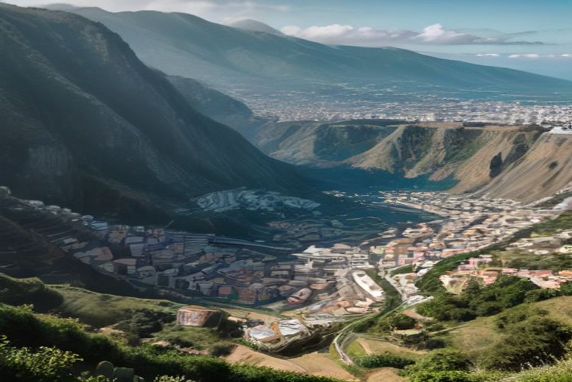
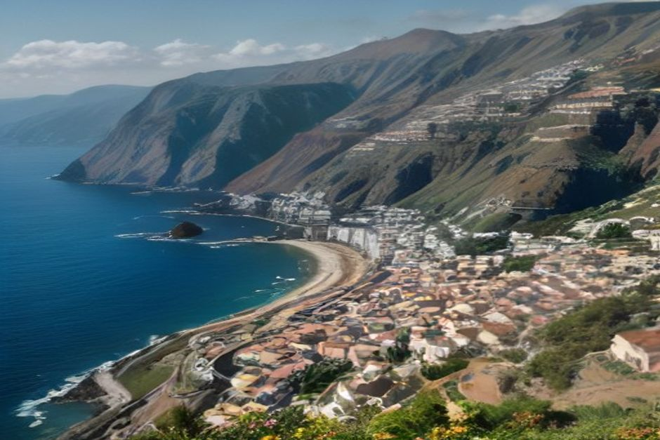

Cabo Girão tops most lists of Madeira's best photo spots — a 580-metre volcanic cliff with a glass skywalk on top and a completely different, more dramatic angle from the water below it. But the island has at least nine other places worth building a morning around, from a red-rock peninsula at sunrise to a fishing village that only looks right in the last hour of light. Here's the ranked list, with the time of day that actually matters for each.
1. Cabo Girão — best from below, at golden hour
Cabo Girão is one of the highest sea cliffs in Europe, and most visitors only ever see it from the glass-floored skywalk on top. The more striking photograph is from underneath: a private boat passing along the base of the cliff puts the full 580-metre wall of basalt directly overhead, with terraced banana plantations clinging to the rock face above. Late afternoon light rakes across the cliff face and turns the volcanic rock a deep rust colour — the same window a Chifbay Day Trip passes through on the run out from Câmara de Lobos.

2. Ponta de São Lourenço — best at sunrise
Madeira's eastern peninsula looks unlike anywhere else on the island: bare, red-ochre volcanic ridges dropping into a turquoise sea, with none of the green laurel forest that covers most of the interior. Because it faces east, sunrise lights the rock face-on and the trail is emptiest before the car park fills — arrive at first light for a shot with no one else in it.
3. Câmara de Lobos — best in the last hour before sunset
This working fishing village of stacked, brightly painted houses above a small harbour was famously painted by Winston Churchill, and it still looks best from the water in the final hour of light, when the boats in the harbour and the pastel façades above them both catch the same warm colour. It's one of the first stops on Chifbay's coastal route out of Funchal, and worth the slow pass.
4. Pico do Arieiro — best just before sunrise
At 1,818 metres, Madeira's third-highest peak often sits above the cloud line, and arriving in the dark before sunrise is what gets you the shot everyone's after: a sea of cloud filling the valleys below while the peak itself stays clear. It's cold and exposed at that altitude even in summer, so bring a proper layer, not just a jacket for later in the day.
5. 25 Fontes — best on an overcast morning
Counter-intuitively, this waterfall and pool deep in the laurel forest photographs best without direct sun — bright midday light blows out the highlights on the water and leaves the forest floor in heavy shadow, while flat, overcast light lets the greens and the waterfall's spray show evenly. It's a 3–4 hour round trip on foot from the Rabaçal car park, and requires the SIMplifica booking system like Madeira's other levada trails.
6. Rua de Santa Maria, Zona Velha — best at midday
Funchal's old town is the one entry on this list where midday actually works — the narrow lane's famous painted doors, each done by a different local or visiting artist, sit in near-permanent shade from the buildings on either side, so the light stays even most of the day. Go slowly; there are more than 200 doors along the street.
7. Porto Moniz natural pools — best when there's swell
The volcanic lava pools on Madeira's northwest tip photograph best exactly when swimming conditions are roughest — a bigger Atlantic swell sends spray crashing over the black rock and the pool edges, which is dramatic from a distance but a reason to skip getting in the water that day. Check the swell forecast before driving up; calm days make for a nicer swim but a flatter photo.
8. Miradouro do Pico dos Barcelos — best in the evening
This hillside viewpoint above Funchal looks straight down over the whole bay — the marina, the old town and the cruise terminal laid out below the mountains behind. As the city lights come on before full dark, it's one of the few spots that photographs well after the sun itself has already dropped.
9. Fajã dos Padres — best from the water
This cliffside cove and organic farm, reached only by cable car or by sea, looks completely different depending on how you arrive — from the cable car you're looking down at the terraces and the tiny cove below; from a boat, you're looking straight up at the 300-metre cliff behind the farm. The boat angle is the one that actually conveys the scale.

10. The coastline from a private boat — best at golden hour
Put together, Cabo Girão, Fajã dos Padres and Câmara de Lobos are really one photograph told from three angles, and the only way to catch all three in the same warm light is from the water. Chifbay's Day Trip and Sunset Trip both include a drone shot over the boat, so you leave with the aerial angle as well as whatever you shoot yourself from the deck — useful on a coastline where the best photograph is rarely the one taken from the road.
Most of Madeira's best photographs share one thing: they're taken looking up at the island from the sea, not down at the sea from the island.
Wherever you start the list, build the day around light, not just location — the same cliff, cove or village can look ordinary at noon and unforgettable an hour either side of sunrise or sunset.